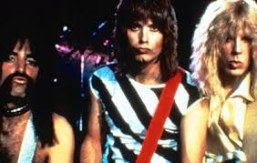
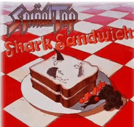
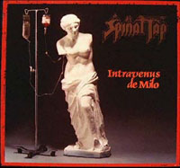
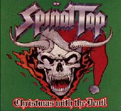
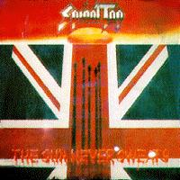
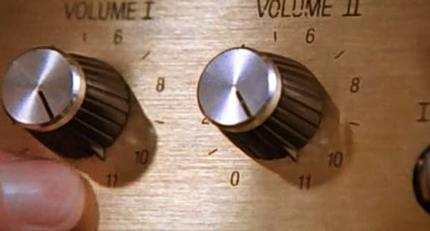
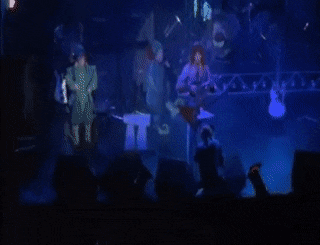

About Spinal Tap
Spinal Tap is one of England's loudest bands. In the late 60s, Spinal Tap was a psychedelic pop band, and has also performed progressive rock, jazz fusion, funk and reggae, but is best known as a heavy metal band. Spinal Tap has also been classified as hard rock and rock and roll.
Discography
Spinal Tap has an impressive discography that transcends genre. Spinal Tap may be the greatest and most influential band to ever rock the stage. Here are some of Spinal Taps greatest records:
Shark Sandwich
Released in 1980 (Polymer)
Notable songs:
- No Place Like Nowhere
Intravenus De Milo
Released in 1974 (Megaphone)
Notable songs:
- Tonight I'm Gonna Rock You Tonight
- Saliva Of The Fittest
Christmas with the Devil
Released in 1984 (Enigma)
Notable songs:
- We Three Kings
- The Other Side Of Christmas
- Sleighed
The Sun Never Sweats
Released in 1975 (Megaphone)
Notable songs:
- Daze Of Knights Of Old
- The Princess And The Unicorn
- The Sun Never Sweats
Equipment
Electronics
Spinal Tap didn't really have to bother with fancy electronics. The one thing that was important was being able to turn it up! Spinal Tap focused on creating innovative amplifiers that surpassed everything else available at the time. Spinal Tap's amps would turn up to 11, while regular amplifiers would only turn up to 10. This helped Spinal Tap achieve the title of England's loudest band.
Stage Effects
Spinal Tap really knew how to put on a show. What could be more "rock" than an actual rock, and what rock is cooler than Stonehenge? Spinal Tap had a scale replica of Stonehenge on the stage. No one else was able to match their stage presence.